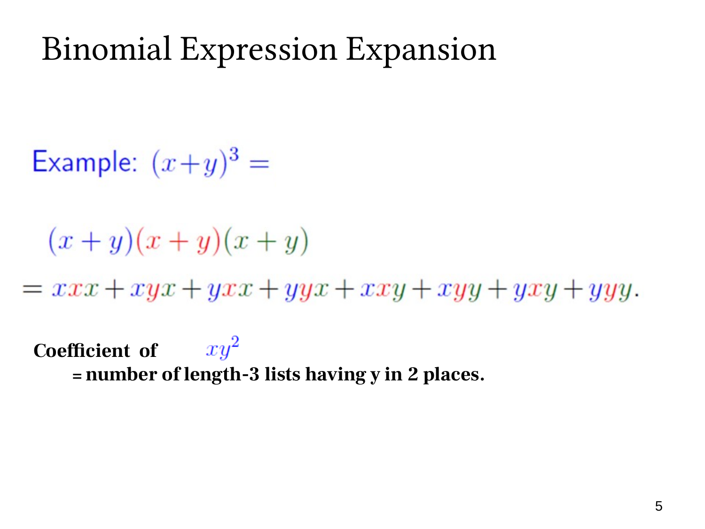

L1.7 · 第 5 页讲解原文
查看这一页课件

xy² 的系数是在数哪两个括号选 y
在八项展开中，本页特别关注 xy2。要产生这个单项式，三个括号中必须恰有两个选 y，另一个选 x。
符合条件的选择列表为
(x,y,y),(y,x,y),(y,y,x).
每个列表乘起来都是 xy2，贡献系数 1，因此合并后的系数为 3。
也可以不列举，直接从三个括号位置中选两个作为 y 的来源：
C(3,2)=3.
选定这两个位置后，剩下的位置只能取 x，没有新的自由选择。
所以本页写“xy2 的系数等于长度三的列表中两个位置为 y 的数量”。它把求系数转成一个组合问题。
一般在 (x+y)n 中，产生 xn−jyj 需要恰好 j 个括号取 y，其系数便是 C(n,j)。系数是在合并同类项时累加贡献，不是把指数 j 直接当成系数。